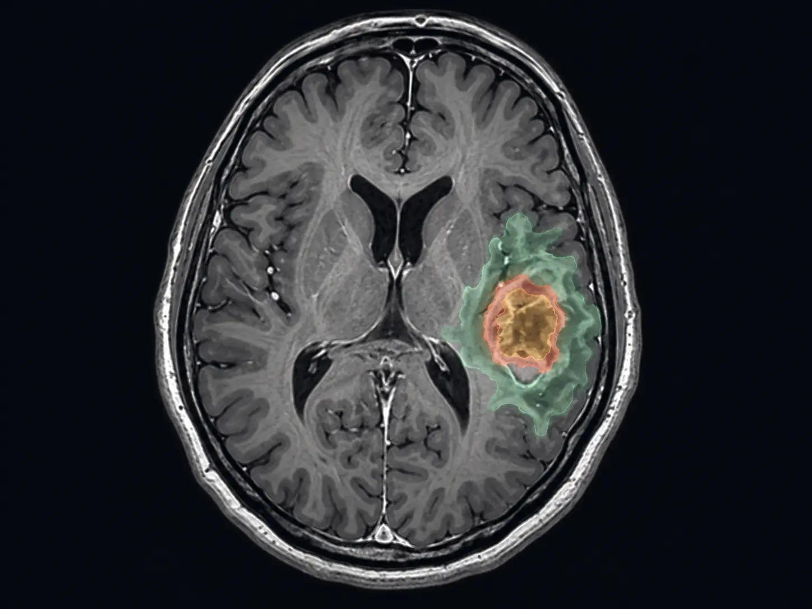

CLINICAL IMAGE INTELLIGENCE
让每一层医学影像
让每一层医学影像
清晰可见，精确可量。
面向医学研究与影像分析的交互式分割展示平台。选择一张医学图像，即可体验从影像导入到分割结果生成的完整流程。
SEGMENTATION WORKSPACE
开始一次影像分析
01
DATASET
三类医学影像数据集选择数据类别
类别选择：大脑 / 心脏 / 前列腺
正在载入大脑数据…选择下方具体图像
等待提交0%
示例影像仅用于科研可视化展示 · LA Dataset 遵循 CC BY 4.0
02
RESULT
等待分析分割结果
结果将在这里显示
选择具体图像并开始分析，系统将自动展示预设分割结果。

DEMO RESULT全肿瘤区域86.42 mL
肿瘤核心34.18 mL
增强区域12.76 mL
演示结果与量化数值仅用于界面展示，不代表临床结论。